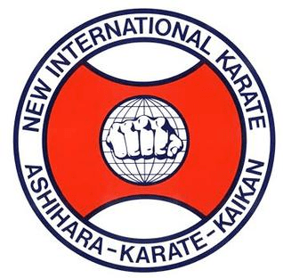

Ashihara-Karate-Kaikan

Ashihara kaikan (芦原 会館) este un karate de stradă modern full contact dezvoltat din karate Kyokushin de Hideyuki Ashihara, cu influențe din diverse arte marțiale, inclusiv Muay Thai, Pankration și Jujutsu, cu accent pe Sabaki, folosind jocul de picioare și tehnici pentru a transforma puterea adversarului și impuls împotriva lor și să se repoziționeze în punctul „oarb” al adversarului. Stilul este axat pe aplicarea practică într-o luptă reală care include mai mulți atacatori.

About me
Ma numesc Enache Leonard Andrei și practic arte martiale încă de la vârsta de 7 ani. De mic am fost atras de sport, dar nu știam că adevărata mea pasiune este pentru artele marțiale până când am pus pentru prima oară piciorul într-un Dojo. Din acel moment, viața mea a evoluat pe un drum ascendent, deoarece prin intermediul artelor marțiale am cunoscut oameni noi și frumoși care astăzi se numesc familie pentru mine. Pe lângă disciplină, respect, anduranță, determinare și multe altele, am avut parte de un al doilea tată, Sempai Vasile Bulmaga, care m-a îndrumat de la vârsta de 7 ani și m-a învățat artele stilului Ashihara Karate, atât pentru a deveni un sportiv desăvârșit, cât și pentru a mă dezvolta ca și persoană. De-a lungul anilor, am participat la numeroase campionate atât naționale, cât și europene sau mondiale. Sunt mândru să spun că am dominat podiumul și am reușit să-mi păstrez locul 1 la proba de kata timp de 5 ani consecutiv la categoria mea, cât și locul 1 la proba de kumite în decursul a 3 ani. Totodată, am obținut remarcabilul loc 1 atât la proba de kata, cât și la proba de kumite aferentă categoriei mele la Campionatul European din 2018, iar în același timp acela a fost ultimul meu campionat la care am participat din cauza unor accidentări grave care m-au făcut să pun capăt competițiilor. Totuși, drumul meu în Ashihara Karate nu s-a oprit aici, ci a continuat la un alt nivel. Chiar dacă nu am mai putut să particip în calitate de sportiv la campionate, acum particip în calitate de arbitru oficial NIKO (New International Karate Organization) și ajut la dezvoltarea stilului Ashihara Karate, urmând ca după o mai bună instruire să-mi deschid Dojo, pentru a îndruma la rândul meu tinerii pasionați de sport.
Gallery

Campionatul European 2018

Campionatul European 2018
Campionatul European 2024
Activities